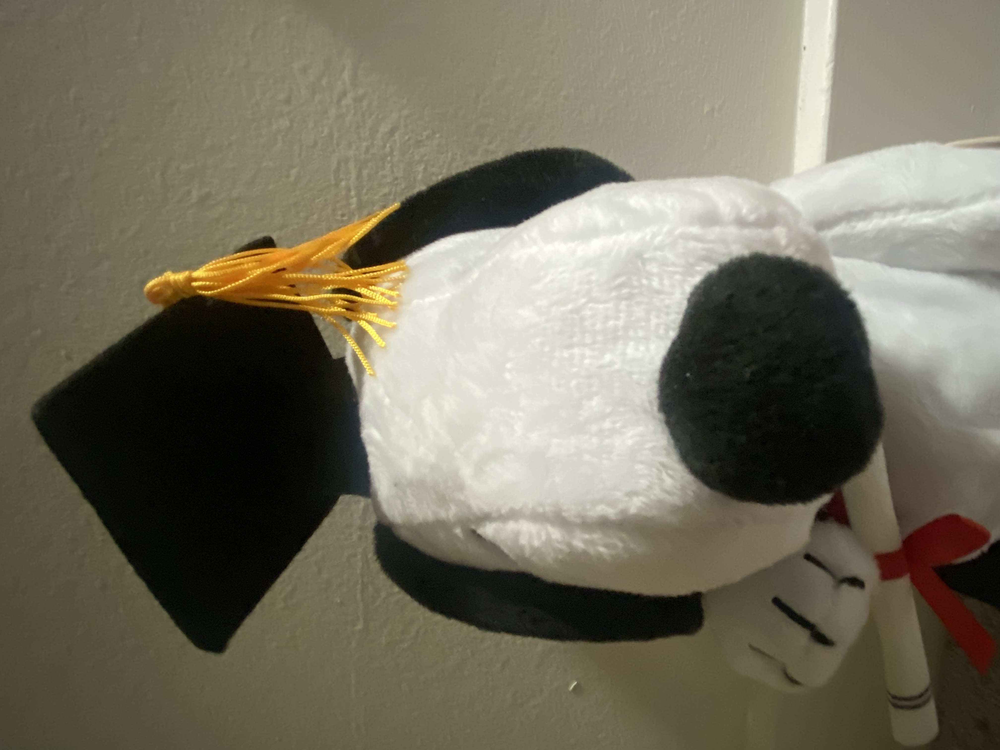

Part 1: Selfie – The Wrong Way vs. The Right Way
I captured selfies at different zoom levels. The wide angle (0.5×) produces distortion, while stepping back and using higher zooms (closer to 1×) produces more natural portraits.

0.5×
0.6×

0.7×
0.8×
0.9×

1.0×